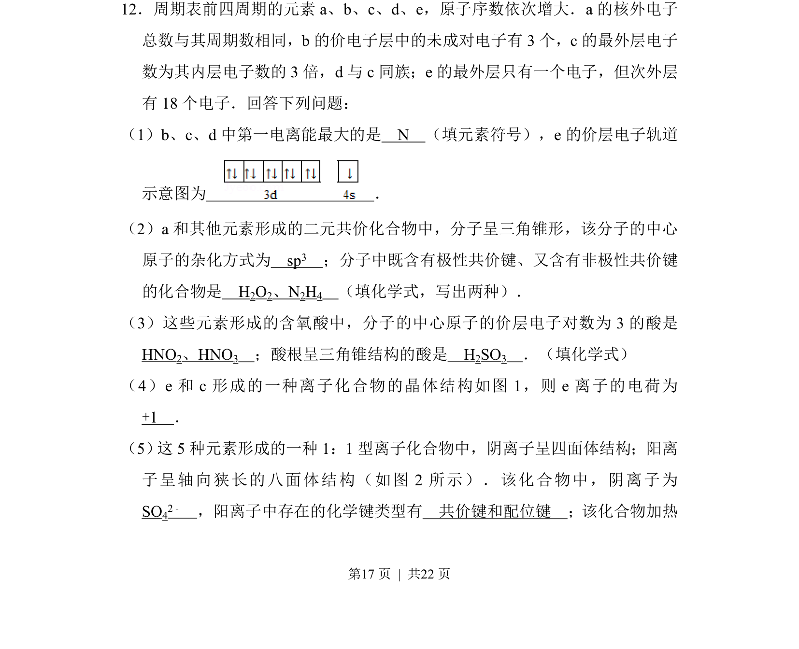
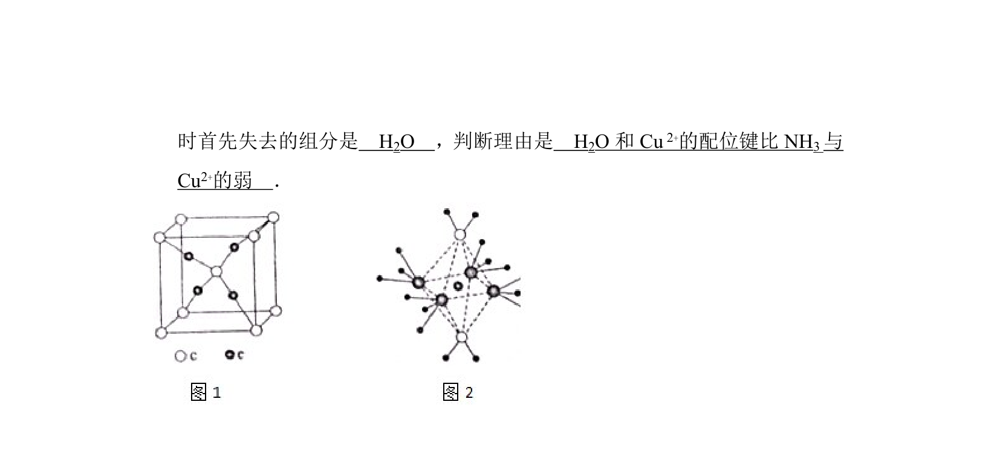
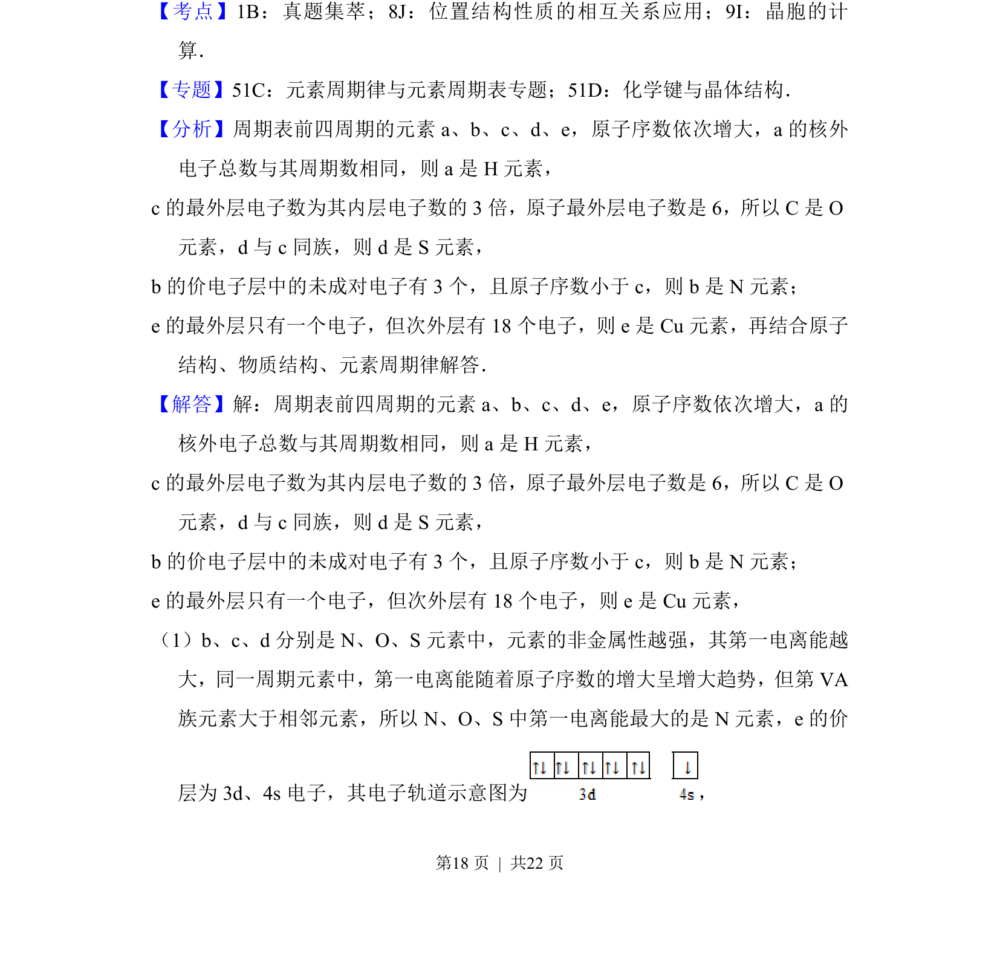
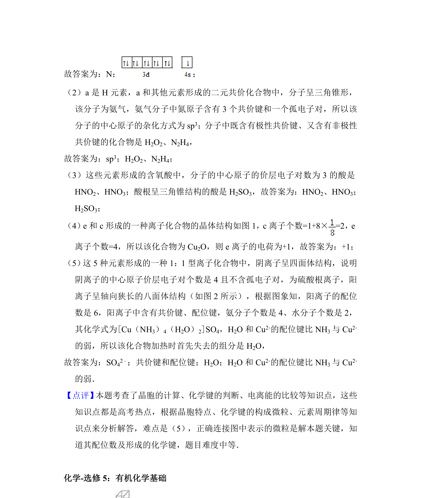

考点：元素周期律 分子结构与杂化 化学键类型 晶体结构


本题考查元素推断、第一电离能比较、分子空间构型与杂化、化学键类型及晶胞结构分析。


📄 原 PDF 第 17 页：
素材/真题/吉林/2008-2024·（吉林）化学高考真题/2014年高考化学试卷（新课标Ⅱ）（解析卷）.pdf
12．周期表前四周期的元素a、b、c、d、e，原子序数依次增大．a的核外电子 总数与其周期数相同，b的价电子层中的未成对电子有3个，c的最外层电子 数为其内层电子数的3倍，d与c同族；e的最外层只有一个电子，但次外层 有18个电子．回答下列问题： （1）b、c、d中第一电离能最大的是 N （填元素符号），e的价层电子轨道 示意图为 ． （2）a和其他元素形成的二元共价化合物中，分子呈三角锥形，该分子的中心 原子的杂化方式为 sp3 ；分子中既含有极性共价键、又含有非极性共价键 的化合物是 H2O2、N2H4 （填化学式，写出两种）． （3）这些元素形成的含氧酸中，分子的中心原子的价层电子对数为3的酸是 HNO2、HNO3 ；酸根呈三角锥结构的酸是 H2SO3 ．（填化学式） （4）e和c形成的一种离子化合物的晶体结构如图1，则e离子的电荷为 +1 ． （5） 这5种元素形成的一种1：1型离子化合物中，阴离子呈四面体结构；阳离 子呈轴向狭长的八面体结构（如图2所示）．该化合物中，阴离子为 SO42﹣ ，阳离子中存在的化学键类型有 共价键和配位键 ；该化合物加热